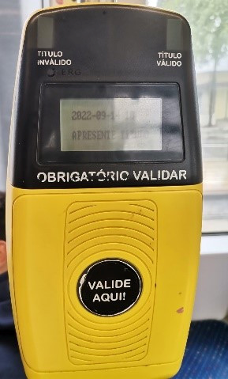

Lab class 1 - Good and bad design
Good example
The purpose of this interface is ticket validation. This is an example of good design for several reasons, firstly because the validation place is represented as a "target", being complemented by the information "Valide aqui" (although there is a possibility that not everyone can read the message but, as I said, it's just an add-on). Another reason is the confirmation lights that allow passengers to confirm the success of the operation. As for possible improvements, the "target" lines could stand out a little bit more and the top part be yellow so that only the "target" is in black.
Bad example
For bad design, I chose the wire that allows to lower and raise the curtain. It has a problem that everyone recognizes, when we use it it is always by trial and error since there is nothing in the wires or in the piece that hides the wires, that allows us to know which of the threads allows the curtain to go up or down. This problem would be solved by drawing two arrows (one up and one down) on the white piece that hides the wires, which would allow you to automatically understand which wires to use.